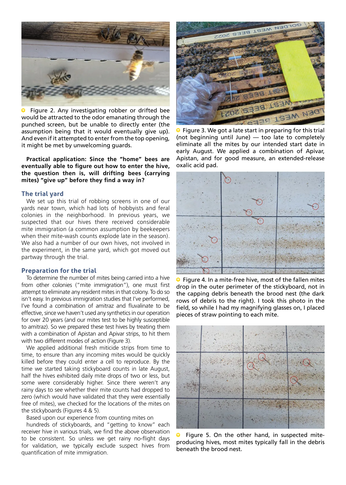

Practical application: Since the “home” bees are
eventually able to figure out how to enter the hive,
the question then is, will drifting bees (carrying
mites) “give up” before they find a way in?
The trial yard
We set up this trial of robbing screens in one of our
yards near town, which had lots of hobbyists and feral
colonies in the neighborhood. In previous years, we
suspected that our hives there received considerable
mite immigration (a common assumption by beekeepers
when their mite-wash counts explode late in the season).
We also had a number of our own hives, not involved in
the experiment, in the same yard, which got moved out
partway through the trial.
Preparation for the trial
To determine the number of mites being carried into a hive
from other colonies (“mite immigration”), one must first
attempt to eliminate any resident mites in that colony. To do so
isn’t easy. In previous immigration studies that I’ve performed,
I’ve found a combination of amitraz and fluvalinate to be
effective, since we haven’t used any synthetics in our operation
for over 20 years (and our mites test to be highly susceptible
to amitraz). So we prepared these test hives by treating them
with a combination of Apistan and Apivar strips, to hit them
with two different modes of action (Figure 3).
We applied additional fresh miticide strips from time to
time, to ensure than any incoming mites would be quickly
killed before they could enter a cell to reproduce. By the
time we started taking stickyboard counts in late August,
half the hives exhibited daily mite drops of two or less, but
some were considerably higher. Since there weren’t any
rainy days to see whether their mite counts had dropped to
zero (which would have validated that they were essentially
free of mites), we checked for the locations of the mites on
the stickyboards (Figures 4 & 5).
Based upon our experience from counting mites on
hundreds of stickyboards, and “getting to know” each
receiver hive in various trials, we find the above observation
to be consistent. So unless we get rainy no-flight days
for validation, we typically exclude suspect hives from
quantification of mite immigration.
Figure 2. Any investigating robber or drifted bee
would be attracted to the odor emanating through the
punched screen, but be unable to directly enter (the
assumption being that it would eventually give up).
And even if it attempted to enter from the top opening,
it might be met by unwelcoming guards.
Figure 3. We got a late start in preparing for this trial
(not beginning until June) — too late to completely
eliminate all the mites by our intended start date in
early August. We applied a combination of Apivar,
Apistan, and for good measure, an extended-release
oxalic acid pad.
Figure 4. In a mite-free hive, most of the fallen mites
drop in the outer perimeter of the stickyboard, not in
the capping debris beneath the brood nest (the dark
rows of debris to the right). I took this photo in the
field, so while I had my magnifying glasses on, I placed
pieces of straw pointing to each mite.
Figure 5. On the other hand, in suspected mite-
producing hives, most mites typically fall in the debris
beneath the brood nest.